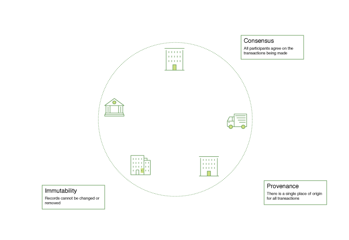

介绍
Hyperledger Fabric是分布式账本解决方案的平台，支持模块化架构，提供高度的机密性，弹性，灵活性和可扩展性。它旨在支持不同组件的可插拔实现，并适应经济生态系统中存在的复杂性。
Hyperledger Fabric提供独特的弹性和可扩展架构，区别于其他区块链解决方案。规划企业区块链的未来需要建立在完全审核的开源架构之上; Hyperledger Fabric是你的出发点。
我们建议首次使用的用户首先阅读以下介绍的其余部分，以便熟悉区块链的工作方式以及Hyperledger Fabric的特定功能和组件。
一旦舒适，或者您已经熟悉区块链和Hyperledger Fabric，请转到“入门”，并从这里探索演示，技术规范，API等。
什么是区块链
##分布式账本
区块链网络的核心是一个分布式账本，记录在网络上发生的所有交易。
区块链账本通常被描述为分散的，因为它被复制到许多网络参与者中，每个参与者都在协作维护。 我们将看到，去中心话和合作是反映企业在现实世界中交换货物和服务方式的强大属性。
除了分散和协作之外，记录在区块链中的信息只能追加，使用加密技术，保证一旦事务被添加到分类账中，就不能被修改。 这种不变性的特征使得确定信息的来源变得简单，因为参与者可以确定信息在事实之后没有被改变。 这就是区块链有时被描述为证明体系的原因。
智能合约
为了支持信息的一致性更新 - 以及启用一整套账本功能（交易，查询等） - 区块链网络使用智能合约来提供对分类账的受控访问。
智能合约不仅是封装信息并使其在整个网络中保持简单的关键机制，还可以写入智能合同以允许参与者自动执行交易的某些方面。
例如，可以写一个智能合同来规定运输项目的成本，这个成本取决于何时到达。 根据双方同意并写入账本的条款，当收到项目时，适当的资金自动转手。
共识
在整个网络中保持账本交易同步的过程 - 确保账本只在交易获得适当的参与者批准时才更新，当账本更新时，它们以相同的顺序更新相同的交易 - 称为共识。

我们将在后面学习更多关于账本，智能合同和共识的知识。 现在，将区块链视为一个共享的，复制的交易系统就足够了，该系统通过智能合约进行更新，并通过一个称为共识的协作过程保持一致的同步。
为什么区块链有用？
当今的记账系统
今天的交易网络只不过是自业务记录以来存在的略微更新的网络版本。 业务网络的成员彼此进行交易，但是他们保持单独的交易记录。 而且他们正在进行的交易 - 无论是16世纪的佛兰芒挂毯还是今天的证券 - 都必须在每次出售时建立其出处，以确保出售商品的商业拥有一系列所有权，以验证他们对商品的拥有权
你留下的是一个这样的业务网络：

现代技术已经从石碑和纸质文件夹到硬盘驱动器和云平台，但是其底层结构是相同的。用于管理网络参与者身份的统一系统不存在，建立起源是非常费力的，需要数天的时间才能清除证券交易（世界交易量在数万亿美元），合同必须手动签署和执行，系统中的每个数据库都包含唯一的信息，因此代表单点故障。
尽管知名度和信任度的需求是明确的，但是今天的信息和流程分享方法仍然不可能建立跨越商业网络的记录系统。
区块链差异
如果不是由“现代”交易系统所代表的低效率的老鼠窝，那么商业网络是否具有在网络上建立身份，执行交易和存储数据的标准方法？ 如果建立一个资产的来源可以通过查看一个交易清单来确定，一旦书面交易，这个交易清单是不能改变的，因此可以被信任？
该业务网络看起来更像这样：

这是一个区块链网络。每个参与者都有自己的账本副本。除了共享账本信息之外，更新账本的过程也是共享的。与今天的系统不同的是，参与者的私人计划被用来更新他们的私人账本，区块链系统共享程序来更新共享账本。
凭借通过共享账本协调其业务网络的能力，区块链网络可以减少与私人信息和处理相关的时间，成本和风险，同时提高信任度和可视性。
您现在知道区块链是什么以及它为什么有用。还有很多其他的重要细节，但都涉及这些信息和流程共享的基本思想。
什么是HyperLedger Fabric？
Linux基金会于2015年创立了Hyperledger，以推动跨行业区块链技术的发展。 它不是宣布单一区块链标准，而是鼓励通过社区处理开发区块链技术的协作方法，鼓励开放式开发的知识产权和随着时间的推移建立关键标准。
Hyperledger Fabric是Hyperledger中的区块链项目之一。像其他区块链技术一样，它具有账本，使用智能合约，并且是参与者管理其交易的系统。
Hyperledger Fabric与其它区块链系统的主要区别在于它是私有的和权限化的。 Hyperledger Fabric网络的成员通过成员资格服务提供商（MSP）注册，而不是一个允许未知身份参与网络的开放式无权限系统（需要证明工作证明的协议来验证交易和保护网络）。
Hyperledger Fabric还提供了几个可插拔选项。账簿数据可以以多种格式存储，共识机制可以切入和切出，并支持不同的MSP。
Hyperledger Fabric还提供创建频道（channel）的能力，允许一组参与者创建单独的交易账本。 对于一些参与者可能是竞争对手而不希望进行的每一笔被所有参与者知道，这是一个特别重要的选择 - 例如，他们向某些参与者提供了一个特殊的价格，而其它人不是。 如果两个参与者形成一个频道，那么这些参与者（而不是其他人）就拥有该频道的分类账副本。
共享账本
Hyperledger Fabric有一个账本子系统，由两个组件组成：全局状态和事务日志。 每个参与者都拥有他所属的每一个Hyperledger Fabric网络的账本副本。 全局状态组件描述了在某个特定时间点的账本的状态。 这是账本的数据库。 事务日志组件记录导致当前全局状态值的所有事务。 这是全局状态的更新历史。 账本则是全局状态数据库和交易日志历史的组合。 账本拥有全局状态可替换的数据存储。 默认情况下，这是一个LevelDB键值存储数据库。 事务日志不需要是可插拔的。 它只是记录区块链网络正在使用的分类账数据库的前后值。
智能合约
Hyperledger Fabric智能合约以链码形式编写，并在应用程序需要与分类账交互时由区块链外部的应用程序调用。 在大多数情况下，链代码仅与分类账的数据库组件，全局状态（例如查询）交互，而不是交易日志。
Chaincode可以用几种编程语言来实现。当前支持的链式代码语言是Go，支持未来发行版中的Java和其他语言。
隐私
根据网络的需求，企业对企业（B2B）网络的参与者可能对他们共享的信息数量非常敏感。对于其他网络来说，隐私并不是最关心的问题。
Hyperledger Fabric支持隐私（使用频道）是关键操作要求的网络以及相对开放的网络。
共识
交易必须按照发生的顺序写入账本，尽管它们可能位于网络中的不同参与者之间。为了实现这一点，必须建立交易顺序，并且必须实施一种方法来拒绝已经插入错误（或恶意）的账本中的不良交易。
这是一个经过深入研究的计算机科学领域，有很多方法来实现它，每个方法都有不同的权衡。例如，PBFT（实用的拜占庭容错）可以提供文件副本相互通信的机制，以保持每个副本的一致性，即使在发生损坏的情况下也是如此。或者，在比特币中，通过一个称为挖掘的过程来进行排序，在这个过程中，竞争的计算机竞相解决一个加密难题，这个难题定义了所有进程随后建立的顺序
Hyperledger Fabric被设计为允许网络起始者选择最能代表参与者之间存在关系的共识机制。与隐私一样，还有一系列需求。从具有高度结构化的关系网络到更加对等的网络。
我们将更多地了解Hyperledger Fabric共识机制，目前包括SOLO和Kafka，并且很快将扩展到SBFT（简化的拜占庭容错），在另一个文档中。
我在哪里可以学到更多？
我们提供了许多教程，介绍区块链网络中的大多数关键组件，了解更多关于它们如何相互作用的信息，然后您将获得代码并针对运行运行一些简单的事务区块链网络。我们还为那些想使用Hyperledger Fabric操作区块链网络的人提供教程。
深入了解本介绍中提到的组件和概念以及其他几个概念，并描述它们如何在示例事务流中一起工作。